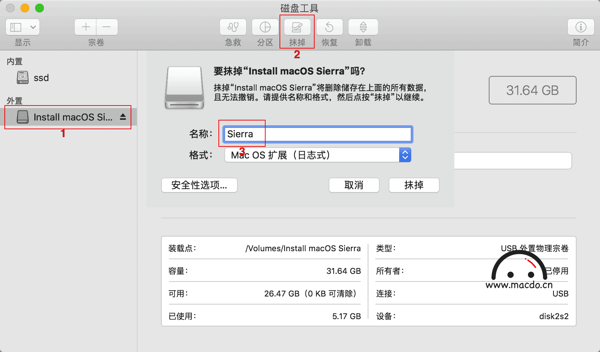
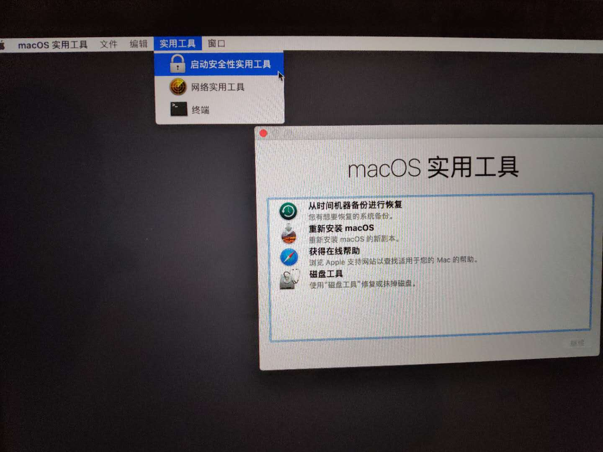
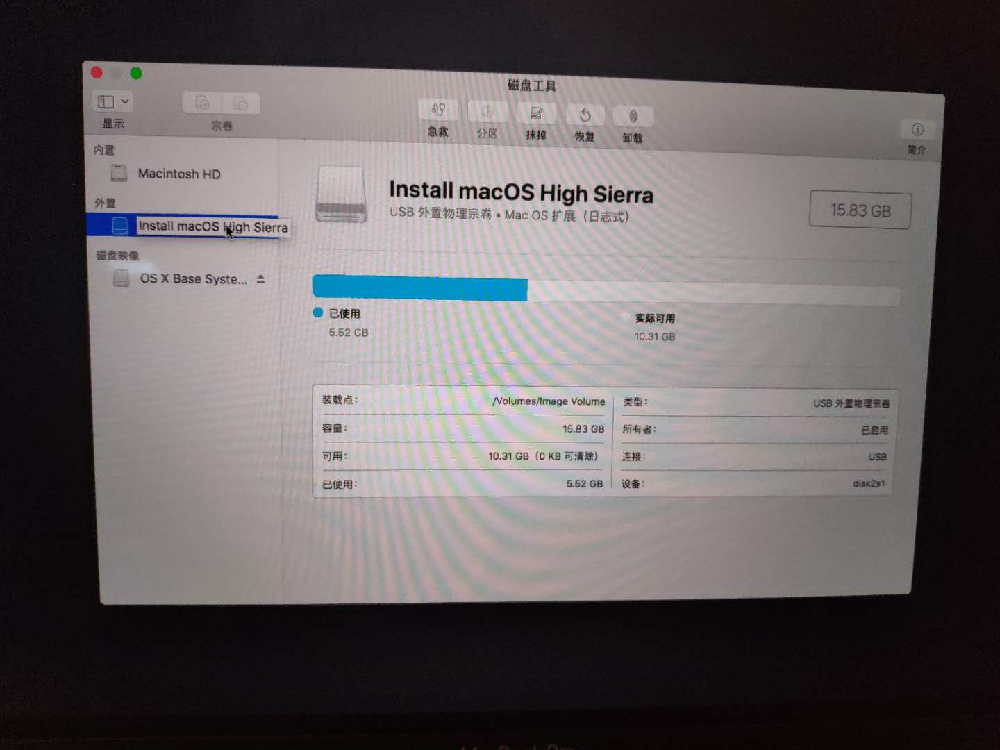
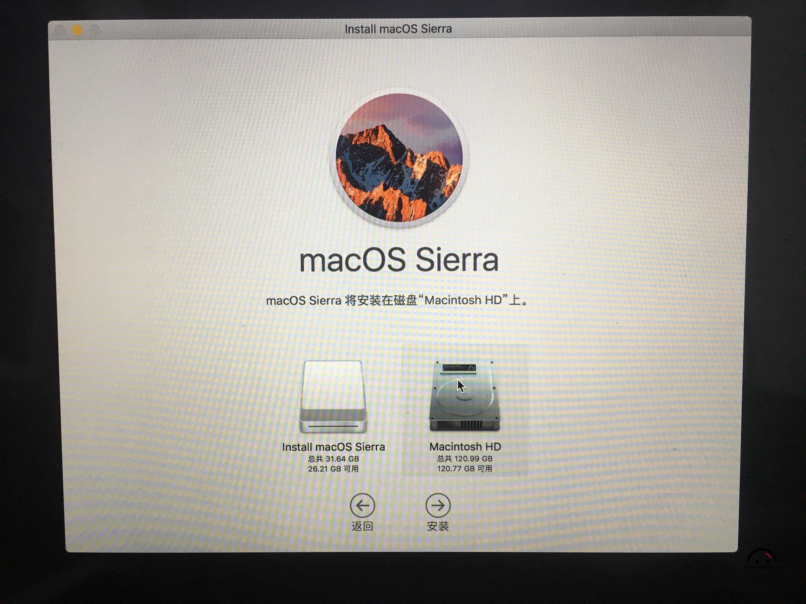
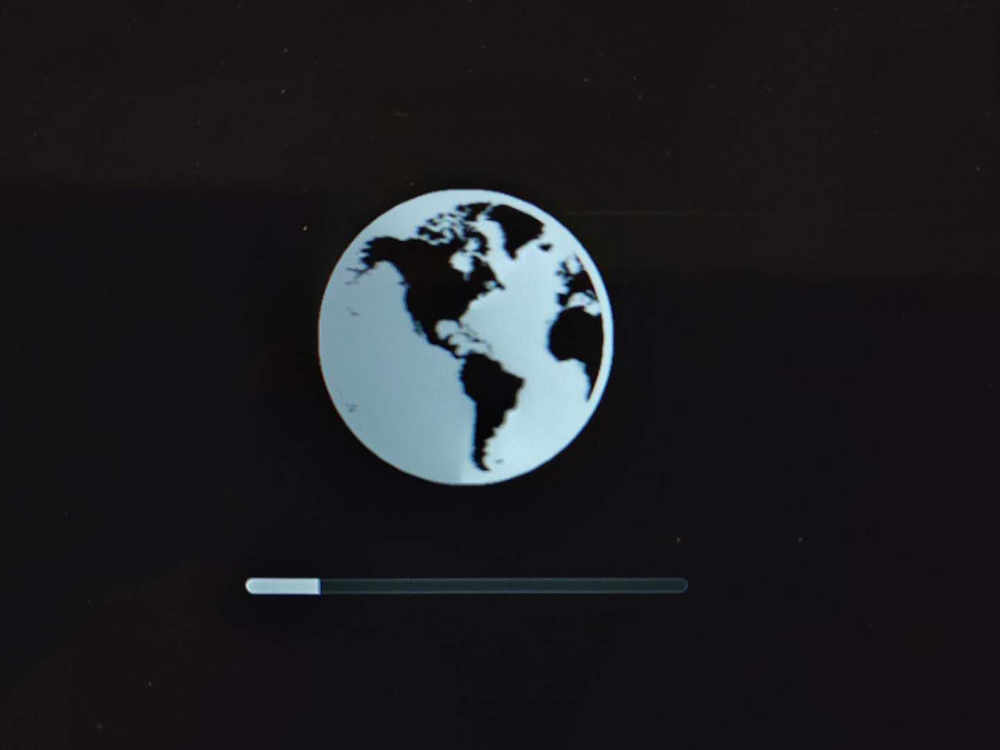
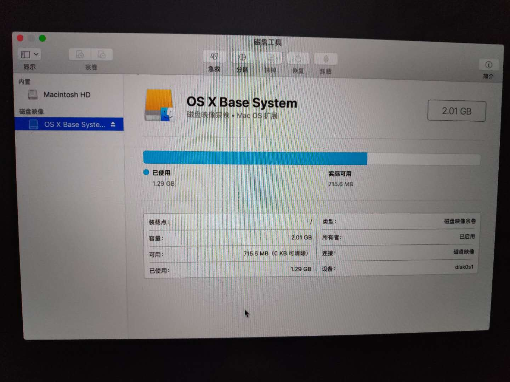
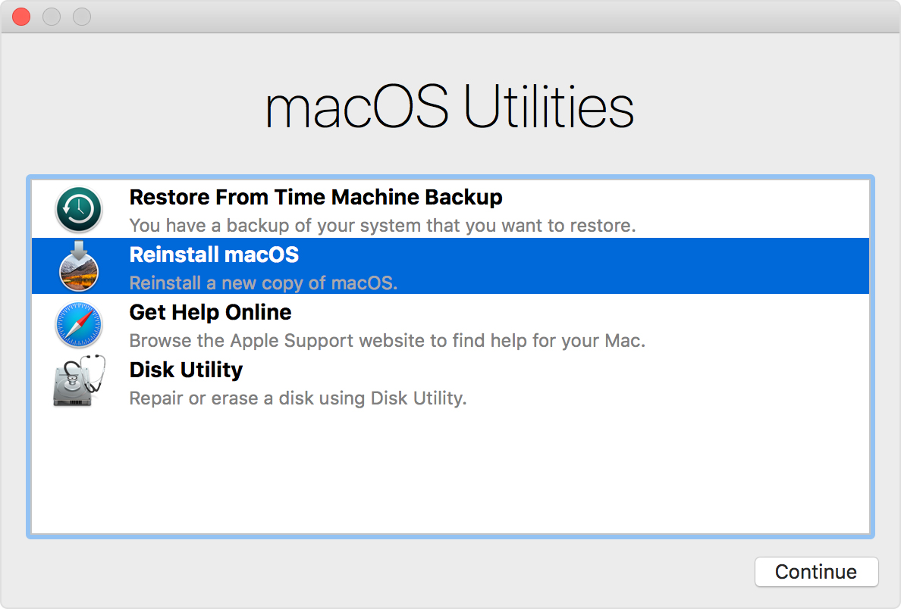

macbook pro 2018 到 os 从mojave 降级到 high sierra
- 参考
从mojave 降级到 high sierra
-
下载 High Sierra
从 https://itunes.apple.com/cn/app/macos-high-sierra/id1246284741?mt=12 跳转到 App Store，点击“获取”来下载 High Sierra 最新版。
会下载到/Applications/Install\ macOS\ High\ Sierra.app -
格式化U盘，作为启动盘
用 12G 以上的U盘。
打开 “应用程序 → 实用工具 → 磁盘工具”，将U盘「抹掉」(格式化) 成「Mac OS X 扩展（日志式）」格式，并将U盘命名为「HIGH_SIERRA」。

-
使用 createinstallmedia 命令制作启动盘。
打开 “应用程序→实用工具→终端”，将下面的一段命令复制并粘贴进去：
U盘制作过程 20分钟左右。
1 2 3 4 5 6 7 8 9 10 11 12
$ sudo /Applications/Install\ macOS\ High\ Sierra.app/Contents/Resources/createinstallmedia --volume /Volumes/HIGH_SIERRA Ready to start. To continue we need to erase the volume at /Volumes/HIGH_SIERRA. If you wish to continue type (Y) then press return: Y Erasing Disk: 0%... 10%... 20%... 30%...100%... Copying installer files to disk... Copy complete. Making disk bootable... Copying boot files... Copy complete. Done.
-
设置允许外部U盘启动
- 按下电源键开机，
Cmd + r进入 “macOS 实用工具” - “实用工具” 》启动安全性实用工具，设置“允许外部U盘启动”

- 按下电源键开机，
-
通过 U 盘安装 high Sierra ，抹盘全新安装系统
- 按下电源键开机，当听到“噹”的一声时，按住 Option 键不放，直到出现启动菜单选项，选择U盘启动。
- 选择【磁盘工具】格式化电脑硬盘
 - 选择【安装macOS】按照新系统到硬盘。

使用macOS Recovery回退（电脑出厂就是High Sierra）
-
启动电脑，迅速按下组合键
Shift-Option-⌘-R，看到apple logo后松开，进入 macOS Recovery

组合键参考
| Command -R | Install the latest macOS that was installed on your Mac.
| Option-Cmd-R | Upgrade to the latest macOS compatible with your Mac.
| Shift-Option-Cmd-R | Install the macOS that came with your Mac, or the closest version still available. -
使用 “Disk Utility”格式化硬盘
必须要格式化原来硬盘，否则提示“不能升级MacOS，已经安装了更高的版本”
 -
选择：“Reinstall macOS”，点继续，期间可能重启几次。

附录
格式化硬盘时候，使用 APFS 还是 Mac OS Extended
High Sierra 和以后版本，使用APFS，但也可以选 Mac OS Extended，High Sierra和以后的OS installer 安装系统时自动转成 APFS。
Disk Utility in macOS High Sierra or later can erase most disks and volumes for Mac using either the newer APFS (Apple File System) format or the older Mac OS Extended format, and it automatically chooses a compatible format for you.
Are you formatting the disk that came built into your Mac?
If the built-in disk came APFS-formatted, don’t change it to Mac OS Extended.
Are you about to install macOS High Sierra or later on the disk?
If you need to erase your disk before installing High Sierra or later for the first time on that disk, choose Mac OS Extended (Journaled). During installation, the macOS installer decides whether to automatically convert to APFS—without erasing your files:
macOS Mojave: The installer converts from Mac OS Extended to APFS.
macOS High Sierra: The installer converts from Mac OS Extended to APFS only if the volume is on an SSD or other all-flash storage device. Fusion Drives and traditional hard disk drives (HDDs) aren’t converted.
Are you preparing a Time Machine backup disk or bootable installer?
Choose Mac OS Extended (Journaled) for any disk that you plan to use with Time Machine or as a bootable installer.
Will you be using the disk with another Mac?
If the other Mac isn’t using High Sierra or later, choose Mac OS Extended (Journaled). Earlier versions of macOS don’t mount APFS-formatted volumes.
Create Installer
1 2 3 4 5 6 7 8 9 10 11 12 13 14 15 16 17 18 19 20 21 22 23 | *Command for macOS Mojave: sudo /Applications/Install\ macOS\ Mojave.app/Contents/Resources/createinstallmedia --volume /Volumes/MyVolume *Command for macOS High Sierra: sudo /Applications/Install\ macOS\ High\ Sierra.app/Contents/Resources/createinstallmedia --volume /Volumes/MyVolume Command for macOS Sierra: sudo /Applications/Install\ macOS\ Sierra.app/Contents/Resources/createinstallmedia --volume /Volumes/MyVolume --applicationpath /Applications/Install\ macOS\ Sierra.app Command for El Capitan: sudo /Applications/Install\ OS\ X\ El\ Capitan.app/Contents/Resources/createinstallmedia --volume /Volumes/MyVolume --applicationpath /Applications/Install\ OS\ X\ El\ Capitan.app Command for Yosemite: sudo /Applications/Install\ OS\ X\ Yosemite.app/Contents/Resources/createinstallmedia --volume /Volumes/MyVolume --applicationpath /Applications/Install\ OS\ X\ Yosemite.app Command for Mavericks: sudo /Applications/Install\ OS\ X\ Mavericks.app/Contents/Resources/createinstallmedia --volume /Volumes/MyVolume --applicationpath /Applications/Install\ OS\ X\ Mavericks.app |
Boot Using OPTION key
Restart the computer.
Immediately after the chime press and hold down the “OPTION” key.
Release the key when the Boot Manager screen appears.
Select the disk icon for the USB flash drive.
Click on the arrow button under the disk icon.